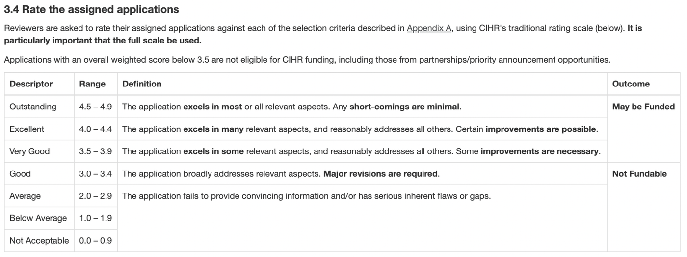
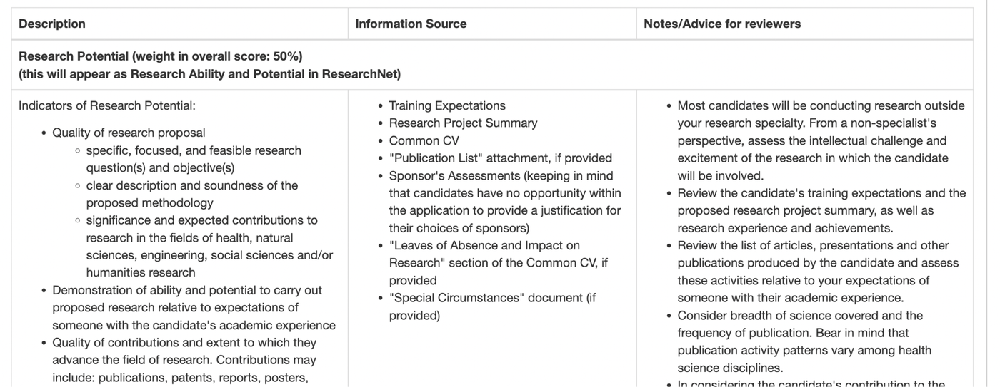
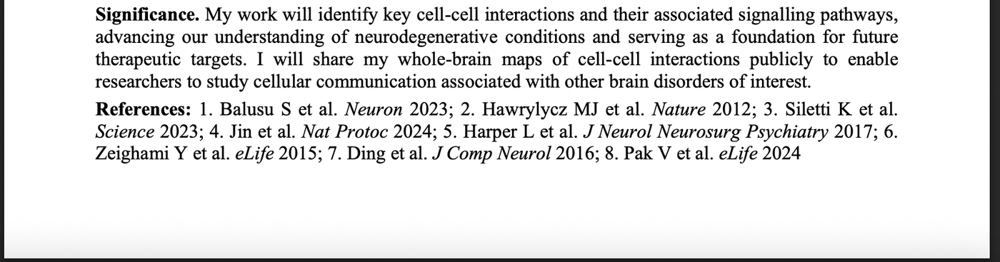
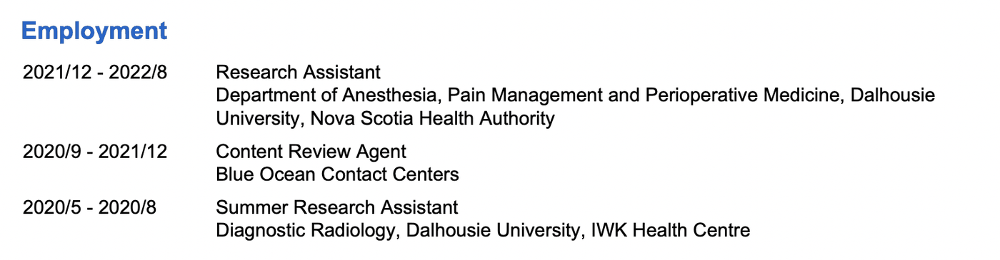
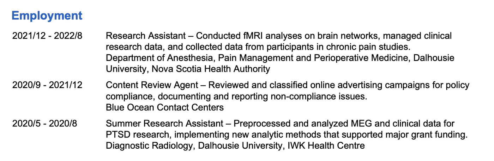
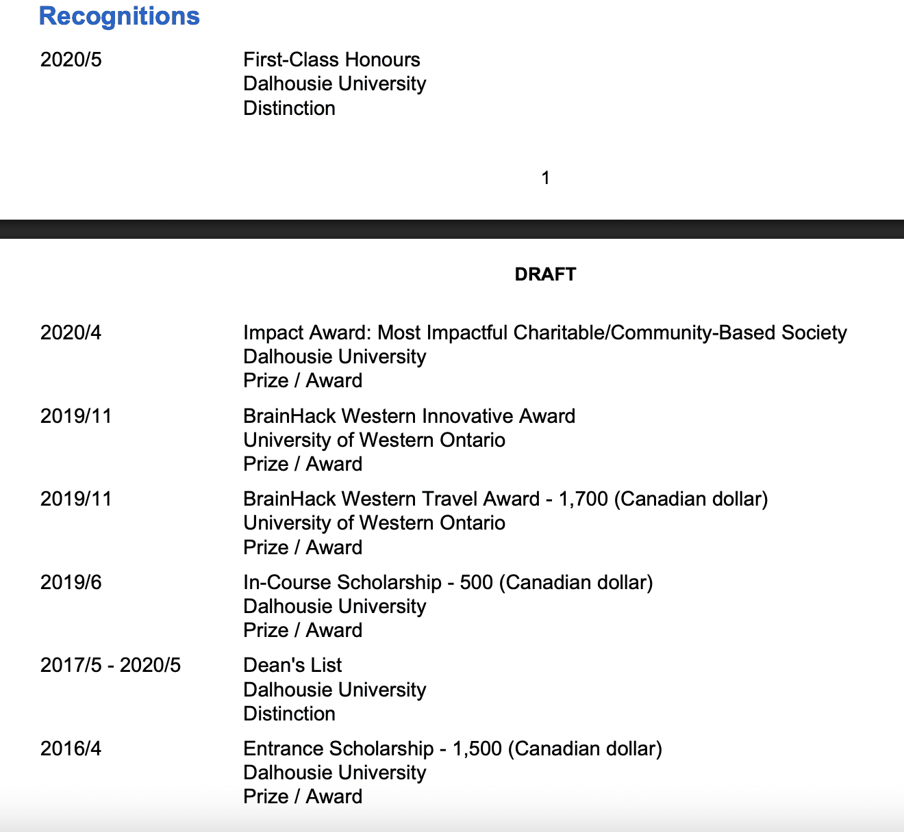
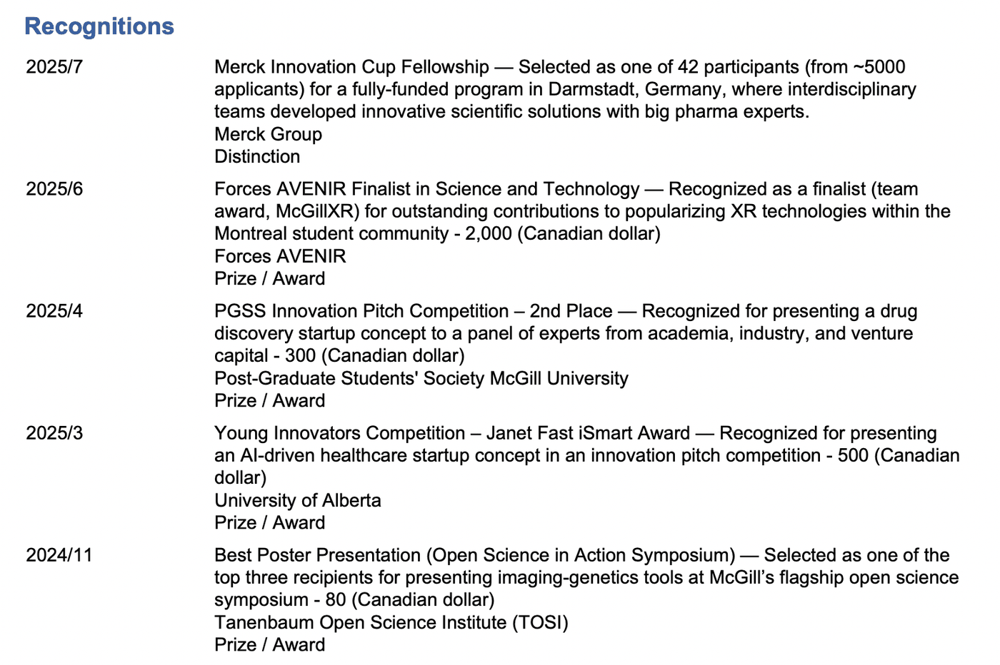

How to win a CGRS D?
I've applied to CIHR doctoral funding twice. Last year, I was in the top 52.57% (276/525) of applicants in my category and didn't get it. This year I was in the top 2.58% (16/621) of applicants.
You might think I published a paper in Nature in one year or something crazy like that but no. It all comes down to luck and being strategic. Here are my tips and niche advice.
Before we start, I want to talk about things we cannot easily change in the span of days:
- Having a high GPA in undergrad
- Having good reference letters
- Having a strong publication record, including first-authored papers
Lacking the third one can hurt your chances of getting the award even if you do everything right. However, I had all three when I first applied and still lost. If you have all three, this post is for you since I mostly talk about things you can change in the span of days/weeks to significantly increase your chances.
I also need to be transparent about things that brutally affect your chances but you can't control whatsoever unless you pull Lee Byung-hun's move from No Other Choice:
- Your department's internal selection and your university's quota
- Who else applies and how large the applicant pool is
- Your reviewers
If you're an international student, keep in mind that only up to 15% of CGRS D awards can go to international applicants.
Let's get to the things you CAN CONTROL:
Last checkpoint! If you're applying for the first time, you need to familiarize yourself with the whole process before reading this post because I mostly talk about specific details and assume you already know the basics. Attending a local information session at your university is a good start. I really like guides and slides published by the University of Toronto. They're always on point and even correctly anticipated that the number of successful applicants would increase from ~30% to ~50% last year.
My experience is specific to CIHR, but I hope NSERC and SSHRC applicants will find some of this advice useful too!
01Change your Mindset
When you first start grad school, everything can feel confusing. You're trying to figure out your project, your training, and what you're even supposed to be doing. At the same time, in September-October you're immediately blasted with deadlines for major scholarship applications. That's why applying to these awards can feel like a chore or just a big task on your never-ending to-do list. It can feel like something your supervisor asked you to do that you just want to be done with.
This mindset can carry over to the next application cycle, even if you're less busy by then and your project is more refined.
I had this exact mindset for years. Did I procrastinate, produce lazy work, or not try hard enough? No. I worked very hard and did what I thought was my best. For example, my supervisor and senior labmates reviewed my proposal in advance. I still won great scholarships, including an FRQ doctoral award. But I realized that for a national competition, it wasn't enough.
You need to find confidence in yourself to go all-in on an award if you really want it.
Think outside the box. Be proactive. Set high standards. Plan in advance. Don't settle if you're not satisfied with the end result.
Once I changed my mindset, my writing became less generic, and I started finding more creative ways to showcase my leadership in the training expectations. Simply not treating the application like a chore can change the way you prepare your materials.
If you're too busy, of course, or don't care much, you can just do your best, test the waters to see what happens, and still win. What you already have may be more than enough. But trust me when I say that pushing beyond your usual version of 'best' can make a difference.
02Know your reviewers
Many applicants assume that it's always PROFESSORS and experts in YOUR FIELD who review your application. At the national stage, your reviewers are post-doctoral fellows. CIHR even publishes the membership lists for its CGRS D review committees. Although they may not be experts in your field, your application will be assigned to one of two multidisciplinary committees based on the scientific area you indicate.
Reviewers can give you great advice and fairly question your research direction. Sometimes they may be wrong. Sometimes they are incredibly sweet and may be more understanding of your circumstances because they themselves were students not long ago.
I highly recommend putting yourself in the reviewers' shoes and reading these guides for reviewers published by CIHR. One is more general, while the other goes into depth about how to rate CGRS D applications.
Some of the evaluation criteria I found especially useful:


Just keeping in mind who you are trying to impress can change the way you present yourself and your research project.
03Proposal
Now that you know your reviewers are postdoctoral fellows, keep in mind that your application will still be reviewed from a non-specialist perspective. Even though your application will be assigned to the most appropriate multidisciplinary committee, the guidelines explicitly tell reviewers: "Most candidates will be conducting research outside your research specialty. From a non-specialist's perspective, assess the intellectual challenge and excitement of the research in which the candidate will be involved."
This is usually the first thing you'll hear at a university writing centre. You need to make sure the main objectives of your proposal are accessible to people from diverse backgrounds, such as psychology, epidemiology, experimental research, or computational research.
In reality, many proposals written in highly technical language still win awards. Often, the jargon gets carried over from grants that PIs write for funding agencies. Still, I think it's a fantastic practice to communicate your research in less technical, more accessible terms.
Balancing clarity and simplicity with a professional, scientific tone is actually challenging. English is not my first language, so I spent hours and hours trying to explain and paraphrase technical terms. My partner writes stellar proposals, so I spent the whole evening before the deadline asking him whether he understood what I meant. I'm not sure whether I succeeded, but I'm glad I took the time to do all this.
For example, instead of simply calling gene-expression datasets 'bulk' and 'single-nucleus,' I explained the distinction in terms someone outside the transcriptomics field could understand: AHBA measures average gene activity from post-mortem tissue samples across nearly the entire brain, while ABC profiles gene activity in individual cells from more than a hundred brain regions.
Instead of simply calling the Allen Human Reference Atlas a 'parcellation,' I wrote: The Allen Human Reference Atlas is a 3D anatomical atlas that divides the brain into anatomically defined regions. Because it shares many regions with the ABC atlas, I will use it to extract corresponding regional values from MRI atrophy maps, enabling direct comparisons between datasets.
Another example is how I explained what PLS does: Partial least squares correlation, a method that identifies patterns by showing how two large datasets are related, will be applied to regional values from healthy interaction maps (AHBA and ABC separately) and patient atrophy maps, to determine which changes in communication strength are associated with changes in atrophy.
The use of AI can be a double-edged sword. ChatGPT gave me very surface-level wording when I was writing my application, but now I find it's not bad at simplifying things. Over time, I found Claude became extremely verbose, with recognizable sentence structures. The best thing you can do is simplify the language yourself, ask friends outside your specialty for feedback, and use LLMs as a second-pass check.
Another thing that can make your proposal much easier to follow is having a clear story. I once saw a LinkedIn post by Jeffrey To, who helps scientists and startup founders communicate their work more clearly, about a framework that really stuck with me: And-But-Therefore (ABT). AND establishes what we already know, BUT introduces the gap or problem, and THEREFORE explains what the project will do about it. His point was that if you can't summarize your proposal in one ABT sentence, the story may still be too confusing.
Jeffrey gives a really simple example of how this works:
Learning & memory:
- The brain uses electrical signals to communicate AND those patterns change as we learn.
- BUT: We still don't know how short-term patterns become long-term memory.
- THEREFORE: I'm tracking changes across hours and days using fMRI and EEG.
I find this especially useful for the Background section. It forces you to structure your background around a clear research gap instead of just listing everything you know about the topic.
Be specific about your methods. It sounds obvious, but let me explain.
Some supervisors may rightfully tell you to be careful about sharing too much detail about unpublished work in scholarship applications or conference abstracts. Yet being too vague backfired on me in the past when I wrote something general like "we'll use a multivariate method to...", but never specified which multivariate method. The reviewers noticed.
Protect your work but be as specific as possible about what techniques you are going to use and why. Something that seems obvious to you may not be obvious to the reviewers.
If you ask AI to write a proposal for you (please don't), notice how it's either too vague and superficial or unnaturally technical and verbose. Here too, you need to find a balance.
Another mistake I saw when reviewing undergraduate scholarship applications was not describing the dataset in enough detail. Some reviewers are very strict about whether you mention consent, ethics approval, and other data collection-related details. Students who mainly use open-access datasets tend to forget to specify demographic details about the dataset (e.g., n = 276, age range 28–34, 123 female participants, etc.).
If you're wondering whether references should be on the same page or on a separate page, they need to fit within the one-page Research Project Summary. One mistake I made in my first application was putting each reference on its own line, which took a lot of space, so I had to squeeze more important parts of the proposal that would have benefited from additional detail. The reviewers also noted that.
Last time, I formatted my references as one compact paragraph, which took three lines instead of... eight! Nobody said anything, so I guess it's an acceptable thing to do.

Another aspect of the proposal that shouldn't be underestimated is formatting. First, obviously follow CIHR's formatting requirements for font size, Times New Roman, margins, and page limits. Clearly separate the main sections so the reviewer can immediately see your Background, Aims, Methods, Feasibility, and Significance. Use bold and italics strategically to highlight important points, but don't overdo it. Good formatting won't make your proposal stronger scientifically, but it can make its strengths much easier for the reviewer to notice.
04Extracurriculars
When I started grad school, I had the impression that only almighty MD-PhD students who start non-profits to feed people in need win Vanier and CGS D awards. And that it could never be me. That's one extreme.
Another extreme is when students who are not involved in any leadership or extracurricular activities get genuinely confused about not winning such awards.
As I've mentioned, I didn't publish a paper in Nature within one year that could explain such a drastic jump in my ranking. The only new thing I published by the time I submitted my second application was one first-author bioRxiv preprint. I already had two first-authored publications before.
I believe what mostly moved the needle was not my research record, but extracurricular experience. Last year, one reviewer gave me 3.9 for the section "Relevant experience and achievements obtained within and beyond academia" while another gave me 4.7. The reviewer who gave me the lower score encouraged me to contribute more to the community.
I was puzzled by that discrepancy in rating. By that time, I'd already been Director of Marketing at McGillXR for two years, helping to organize extended reality hackathons and game development workshops.
Apparently, being part of one student club may not be enough.
So, to beef up your achievements beyond academia, I suggest taking one of two routes: either start something new or take on a major leadership role (depth), or become involved in several communities (breadth). Whatever suits your priorities and personality.
I promised myself that next time it would be criminal for a reviewer to rate me anything lower than 4.5 for the achievements section (got 4.9 and 4.8 last round). So, I chose the second route (breadth) and decided to join several new initiatives. My main criterion was to join something I felt aligned with and that could become a coherent part of my story.
For example, my team won second place in the natHacks neurotech hackathon. I genuinely wanted to take the hackathon project further, which got me interested in scientific entrepreneurship. This interest led me to become a member of the PGSS Innovation Committee, where I helped organize events promoting innovation and entrepreneurship for McGill graduate students. I then became an Ambassador for the Quebec Scientific Entrepreneurship Program and finally participated in McGill Dobson's Life Sciences Lean Startup. One thing led to another over the course of a year.
My second story is about open science. My lab actively practises open science by releasing the code and computational resources for studying neurological disorders. I published whole-brain maps of cell type distributions that neuroimaging researchers outside Canada have since used in their studies. I decided to expand on that and created an R package for brain gene marker annotation in 2024. These efforts culminated in my presenting both resources at TOSI's Open Science in Action symposium and receiving the Best Poster Presentation prize. I'd become a big fan of TOSI, so I felt it would be a natural next step for me to join their student council.
These two narratives (scientific entrepreneurship and open science) became two separate paragraphs in my training expectations essay. Entrepreneurship became part of my 'what I do beyond academia' paragraph, while the sentences about TOSI fit naturally into the section explaining why the Neuro has provided such a strong training environment for me.
If you have time on your hands, build or join the communities you feel most aligned with. Choose ones you're genuinely passionate about and that can become a complementary part of your narrative, rather than whatever 'sounds cool' or something you picked randomly.
05Think through your CCV
Here, the advice about changing your mindset comes in handy. So many students and even professors complain about the lengthy process of filling out the Canadian Common CV. You just put your main things in there and want to be done with it ASAP. But don't treat the CCV as just another form to fill out. How you present the same things here can make a big difference.
My first piece of advice: take your time and 1) include as many relevant details as you reasonably can instead of leaving things short and self-explanatory, and 2) present the information in a way that is easy to scan and understand.
CIHR specifically encourages you to include relevant impacts in the Activities section and tells reviewers to assess a broad range of contributions.
For example, when I applied for the first time, in the Employment section, I just put the dates, my job title ('Research Assistant'), the organization ('Nova Scotia Health Authority'), and nothing else.

Last time, I added a one-sentence summary of what I did in each position.

Apply this rule to other sections. Add short, clear descriptions of what your activities, recognitions, and job positions involved. Briefly explain what a company or organization does when it may not be obvious to the reviewer. Don't be shy about adding a useful statistic, like the one I used to get people's attention for this post — 'ranked in the top 2.58% of applicants'.
My Recognitions section used to look like a plain list, but it became a two-page-long intimidating message "don't you dare say I don't have achievements" once I added a short description explaining each of them.
Do you see the difference?
My CGS M application from 2022:

My last CGRS D application from 2025:

You've probably put in your CCV the most essential things. I did too the first time I applied. But once I changed my mindset, memories of things I'd done but forgotten to include mysteriously started unlocking.
I'll give you some examples that might help refresh your memory too.
Group awards
Mentioning relevant group awards can strengthen your application and show that you contributed to a successful team. Just make it explicit that it was a group recognition. For example, I was a marketing exec for a Relay For Life fundraiser in 2019. Every week, I made graphics in Canva and scheduled posts on Instagram. I even designed the main poster for the event. We raised ~20,000 CAD and won Dalhousie's Impact Award for the Most Impactful Charitable/Community-Based Society. The president and co-president said any of us could join them at the award ceremony. The gala was cancelled because of COVID, but the award still stood.
A similar example, where the gala, fortunately, did happen, was Forces AVENIR. McGillXR became a finalist for the Forces AVENIR Community Award in Science and Technology. The main execs attended the award ceremony in Quebec City, but I couldn't attend because my partner's graduation was the same day.
Other examples
Two other things I forgot but added last time were volunteering at the OHBM conference in Montreal and winning the iGEM synthetic biology hackathon at Dalhousie University. What the volunteering actually involved was standing in the Palais des congrès and directing attendees to the right room for a workshop. The iGEM hackathon was a small event with only two competing teams, and the actual iGEM participants came up with the ideas and walked us through the project-development process. They never announced a winning team and said it would be determined later, but I eventually found a $250 Amazon gift card in my inbox.
As you can see, there were reasons I usually didn't mention these things in my CV, but that doesn't mean they didn't happen or that I didn't contribute. Never lie, but there may be non-obvious things like these that, altogether, can strengthen your application.
Mentorship
Another area applicants can easily forget about is mentorship. You can include and describe your TA positions here, but think beyond formal teaching. Have you trained an undergraduate student or a new lab member? Helped someone learn a method, coding language, or analysis pipeline? Guided a junior student through a project, poster, or presentation?
Graduate students often do a lot of informal mentoring without ever calling it mentorship.
If you genuinely invested time in someone else's training and development, it deserves to be described in your CCV. Just be specific about what you actually did rather than exaggerating occasional help into formal supervision.
06Luck
I also want to be transparent that luck can make or break your application. You can be excellent all around, but reviewers are human, and the same information can sometimes be interpreted very differently. For example, I know of people from the same lab using very similar methods and experiments whose sex and gender integration sections were judged harshly in one case and much more favourably in another. And as you've seen from my first application, discrepancies between reviewers' ratings do exist. Fortunately, the last time I applied, I got very sweet reviewers.
So you're probably wondering: why is luck listed among the things you can control? Because while you can't choose your reviewers, you can make sure they have as few reasons as possible to score you down. If you don't get the award the first time, figure out what could be improved and try again. The stronger every part of your application is, the more you put luck on your side.
That being said, I wish you all the best this application cycle and, of course, best of luck! :)